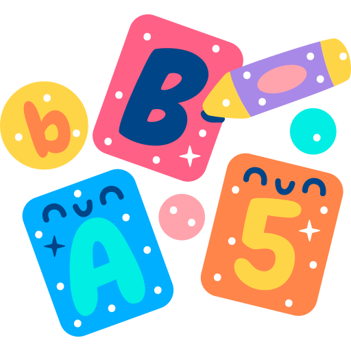

Texto
ACTIVIDADES
actividades

Con esta actividad se comienza a permitir a cada equipo (tripulación) personalizar su misión, pudiendo elegir su propia fecha de despegue y la fase de la Luna que se podrá ver desde la Tierra en el momento del despegue y alunizaje.
ACTIVIDAD 8. Planificar el alunizaje de la nave teniendo en cuenta el calendario lunar, la duración del viaje y su órbita.
La finalidad de la actividad es que el alumnado aprenda a organizar y calcular fechas, teniendo en cuenta las fases de la Luna, así como fomentar el trabajo en equipo y la toma de decisiones compartidas.